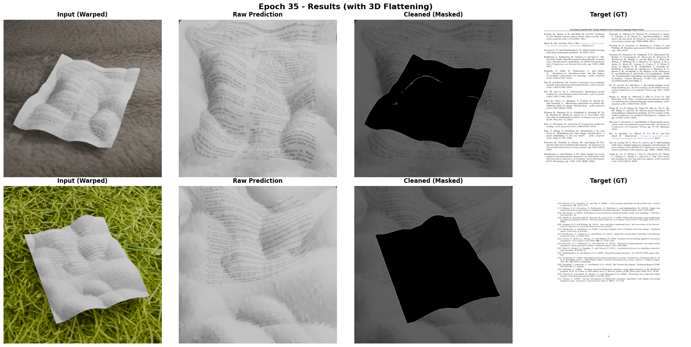
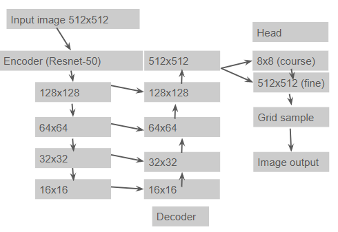
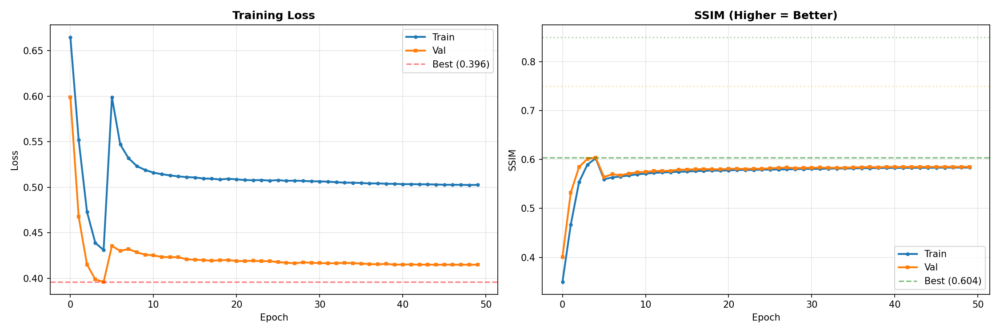

Document Unwarping
Computer Vision Final Project
Project Summary
This project implements a deep learning-based document unwarping system that predicts UV coordinate fields to geometrically rectify warped/curved document images. The model uses a two-stage coarse-to-fine approach with progressive loss scheduling for robust training. The model doesn't predict a rectified image directly, it predicts a geometric mapping where each output pixel queries "where in the input do I come from?" (backward warping).
Results

Input (warped) → Prediction (dewarped) → Ground Truth → Error map
The model achieves ~0.59-0.6 Masked SSIM on the validation set. I found there was often a tradeoff between high SSIM (structural similarity) and text clarity—sometimes a higher SSIM didn't mean the text was more readable.
Model Architecture

U-Net style encoder-decoder with two-stage warping head
Encoder-Decoder
- Encoder: ResNet50 backbone (pretrained)
- Decoder: U-Net style with skip connections
- Normalization: GroupNorm (stable for small batches)
- UV Output: Tanh-bounded residuals clamped to [0,1]
Two-Stage Warping Head
- Coarse: 8x8 features for large deformations
- Fine: 512x512 for residual corrections
- Final UV: Coarse upsampled + Fine delta
- Warping: Bilinear grid_sample with border padding
Key Insight: Backward Warping
The model doesn't output a rectified image—it outputs a geometric mapping called a UV grid. Conceptually: "as an output pixel, where in the input do I come from?" Differentiable unwarping is performed via backward sampling using PyTorch's grid_sample.
Progressive Loss Schedule
I wanted the model to learn geometry first before worrying about detail. Introducing all losses at once caused training collapse, so I used progressive ramping:
| Loss | Weight | Start | Purpose |
|---|---|---|---|
| Masked SSIM | Primary | Epoch 1 | Reconstruction quality on document region only |
| Source Coverage | 0.2 | Epoch 1 | Prevents cropping (was a big problem initially) |
| TV Smoothness | 0.03 | Epoch 3 | Penalizes sharp UV discontinuities |
| UV Supervision | 0.1 | Epoch 3 | Direct supervision from GT UV maps |
| Area Preservation | 0.02→0.2 | Epoch 3 | Prevents non-uniform stretching ("lumps") |
| Laplacian Smoothness | 0.01→0.1 | Epoch 3 | Reduces local curvature in UV field |
| Fold Prevention | 0.5 | Epoch 6 | Penalizes negative Jacobian (self-intersections) |
| High-Pass Gradient | 0.15 | Epoch 6 | Preserves text edges via Sobel comparison |
Training

Loss and SSIM curves over 50 epochs
Training Setup
- Platform: Google Colab A100
- Batch Size: 8 (effective 16 with accumulation)
- Optimizer: AdamW (lr=5e-5, weight_decay=1e-2)
- Scheduler: Cosine Annealing
- Mixed Precision: FP16 with GradScaler
Challenges
- Model would "cheat" by modifying background to boost SSIM
- Training collapse when introducing losses too fast
- Colab crashing and losing training scripts
- Limited compute budget (had to buy more credits)
Key Insights
What Worked
- Progressive ramping is critical: Introducing all losses at once causes training collapse
- Masked metrics matter: Ignoring background prevents the model from cheating
- Residual UV is stable: Predicting offsets from identity grid trains faster than absolute coordinates
- 3D flattening helps: Area preservation and Laplacian smoothness reduce "lumps"
What Didn't Work
- Severe folding: UV field still produces local self-intersections
- Boundary errors: Mask inaccuracies cause UV extrapolation near edges
- Lumps: Couldn't fully smooth out the non-uniform stretching artifacts
Unimplemented Features
The following features were designed but disabled in the final config due to time constraints:
- Curvature Weighted Fold Loss: Weight fold penalties by local curvature magnitude to prevent folds in high-curvature regions
- UV Attention Mechanism: Learnable attention weights to focus UV prediction on important regions
- Learnable UV Bias: Global learnable offset for UV coordinates to compensate for systematic biases
- Post-Warp Refinement Network: Small CNN to refine warped output and reduce artifacts
Reflection
The model doesn't work as well as I expected, but text is semi-readable. I feel like if I had more compute power and time I would have been more successful. This project taught me a lot about geometric deep learning, the importance of loss scheduling, and the challenges of training models that predict dense coordinate fields.